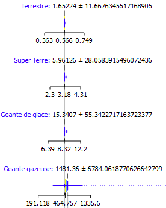

Masse en fonction du type
Analyse des masses des planètes (Unité : masse terrestre) en fonction de leur type
Analyse des masses des planètes (Unité : masse terrestre) en fonction de leur type
Analyse des rayons des planètes (Unité : kilomètre) en fonction de leur type
Analyse des périodes d’orbite des planètes (Unité : année) en fonction de leur type
Les différences entre les moyennes étant faibles et les écarts-types étant élevés, la variable est donc beaucoup moins explicative pour la prédiction du type, elle a été supprimée.
Les différences entre les moyennes étant faibles (entre les types Terrestrial, Super Earth et Neptune-like) et les écarts-types étant élevés, la variable est donc beaucoup moins explicative pour la prédiction du type, elle a été supprimée.
Les différences entre les moyennes étant faibles (entre les types Terrestrial, Super Earth et Neptune-like) et les écarts-types étant élevés, la variable est donc beaucoup moins explicative pour la prédiction du type, elle a été supprimée.
Les médianes de Terrestrial, Super Earth et Neptune-like sont à 0, du fait que beaucoup de planètes possèdent une excentricité de 0, la variable est donc beaucoup moins explicative pour la prédiction du type, elle a été supprimée.
La corrélation étant très élevée, il vaut mieux supprimer une des deux variables (ici on a décidé de supprimer rayon d’orbite) pour alléger les données et limiter la pollution
La planète COCONUTS-2 b possède un rayon d’orbite autour de son astre de 7506 unités astronomiques (1 unité astronomique = 150 millions km, soit 6255 fois le rayon d’orbite de la Terre), et donc elle effectue un tour de son astre en + 1 million d’années
La planète HD 100546 b est la planète la plus grande de notre dataset, avec un rayon de 482386 km, soit 6.9 fois plus grande que Jupiter et 75 fois plus grande que la terre. Elle est presque aussi grande que notre soleil qui lui possède un rayon de 696340 km
La planète K2-52b possède une masse de 45792 masses terrestres !! Elle est 144 fois plus massive que Jupiter
La planète PSR B1257+12 b possède la plus petite masse de notre dataset elle pèse 1/50 de la masse de la Terre
La planète Kepler-37 b est la plus petite de notre dataset, elle possède un rayon 3 fois plus petit que la Terre
La planète K2-137 b possède un rayon d’orbite 300 fois plus petit que la Terre, elle effectue un tour de son astre en 0.00055 année, soit 4 heures et 48 minutes